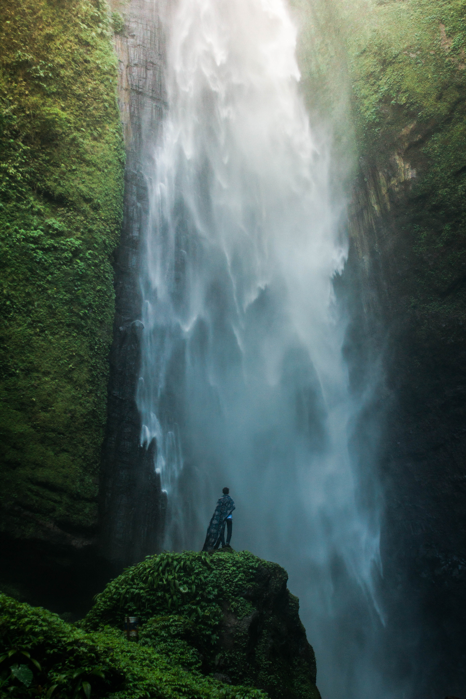
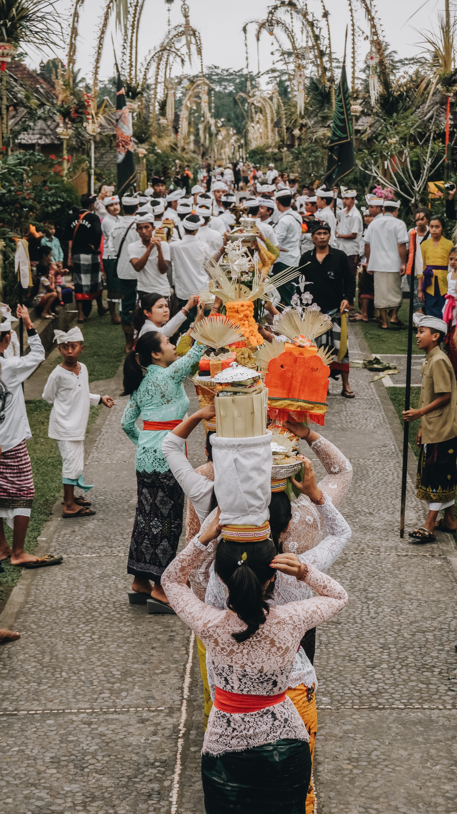
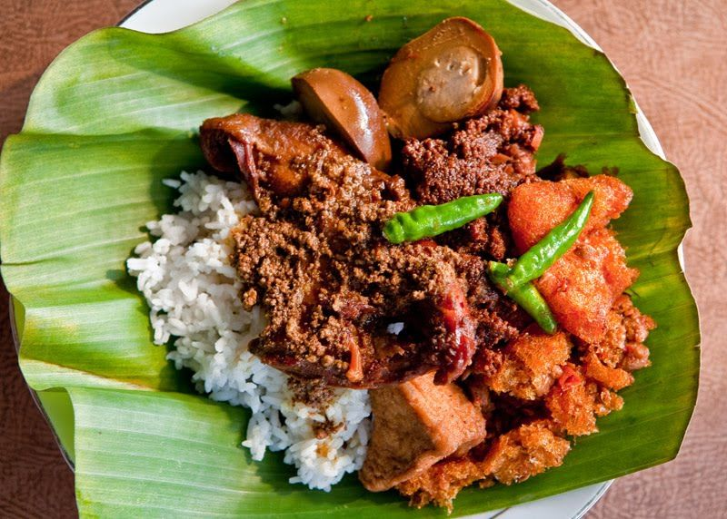
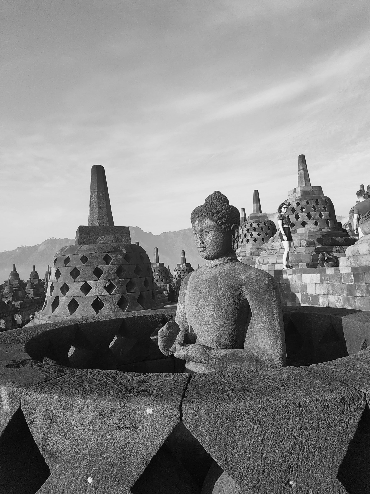

Destination

Nusa Penida is an island southeast of Indonesia's island Bali and a district
of Klungkung Regency that includes the neighbouring small island of Nusa Lembongan.
The Badung Strait separates the island and Bali. The interior of Nusa Penida is
hilly with a maximum altitude of 524 metres. It is drier than the nearby island of Bali.
There is very little tourist infrastructure.There are two small islands nearby -
Nusa Lembongan and Nusa Ceningan - which are included within the district (kecamatan).
Administratively, the kecamatan of the same name, had a population of 45,178 in 2010 census,
covering 202.8 km2[1], very little changed from 10 years prior.
Nusa Penida is the largest and most exotic of the 3 Nusa islands,
thanks to its collection of unique Hindu temples and picturesque natural
features of cliff formations and lagoons. More recently, the island became best
known as the new sanctuary of the once-endangered Bali starling (originally an endemic
species from the forested region of West Bali National Park) following a highly successful
captive breeding programme.
Culture

Culture in Bali
Balinese culture is influenced by the religion beliefs; we can say that the religion and culture influenced each other and also development of every kind of art in Bali. Music, drama and dance were part of the ceremonies and temple celebrations. Watching the dance performance for the first time might feel creepy, scary or even funny... After you dig deeper and learn about the stories that are interpreted by music, dance and costumes, it'll make much more sense and it'll actually get much more interesting. There are few types of Balinese dance, but what they all have in common, is that the dancers use their whole body to tell the stories from the past.
The dance will amaze you by its movements, where every part of body from the head to the tips of the fingers and toes has its own precise position. What makes it special and maybe bit creepy is the way of using facial expression and eyes to tell the story. You won't see this anywhere else in the world. Dancers are usually accompanied by the traditional music called gamelan. In Balinese music you can hear instruments like bronze and bamboo xylophones, gongs and a number of gong chimes, variety of percussion instruments like cymbals, bells and drums.
Culinary

Gudeg is a traditional Javanese cuisine from Yogyakarta and Central Java, Indonesia. Gudeg is made from young unripe jack fruit (Javanese: gori, Indonesian: nangka muda)
stewed for several hours with palm sugar, and coconut milk.Additional spices include garlic, shallot, candlenut, coriander seed, galangal, bay leaves, and teak leaves, the latter
giving a reddish-brown color to the dish.[4] It is often described as "green jack fruit sweet stew".
Histori

Borobudur, or Barabudur is a 9th-century Mahayana Buddhist temple in Magelang Regency,
not far from the town of Muntilan, in Central Java, Indonesia. It is the world's largest Buddhist temple.[1][2][3] The temple consists of nine stacked platforms, six square and three circular, topped by a central dome. It is decorated with 2,672 relief panels and 504 Buddha statues. The central dome is surrounded by 72 Buddha statues, each seated inside a perforated stupa.[4]
Built in the 9th century during the reign of the Sailendra Dynasty, the temple design follows Javanese Buddhist architecture, which blends the Indonesian indigenous cult of ancestor worship and the Buddhist concept of at